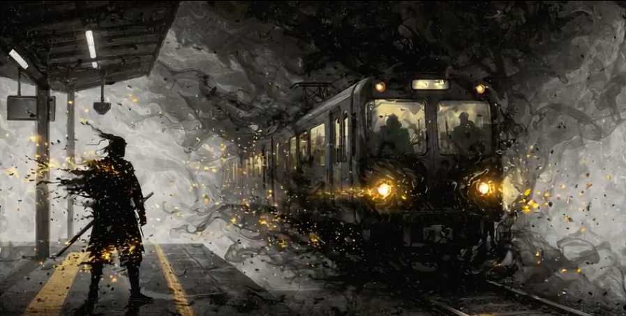

今週末、暇ならちょっと遠くへ出掛けてみよう。
混雑した観光地より行ったことがない街へ行きたい・・・
時間や休日はあるけど目的地がない・・・
一人でも楽しめる旅をしたい・・・
参加型の謎解きはしんどい・・・
エピソード
 NEW
NEW
文学に埋もれた部屋
商店街に漂う“消えたモチーフ”の噂。看板、レシート、古い掲示板——街の断片から真相へ近づく。
 NEW
NEW
茎と魚は何故消えたのか？
商店街に漂う“消えたモチーフ”の噂。看板、レシート、古い掲示板——街の断片から真相へ近づく。

幼い時の記憶 懐かしの遊具
なくなった遊具の手がかりを追って、路地裏と屋上をめぐる小さな探偵行。最後に待つのは——。

戦艦島
地図から消えた島影の由来。古写真、社標、倉庫跡——欠けたピースを埋めていく現地パズル。